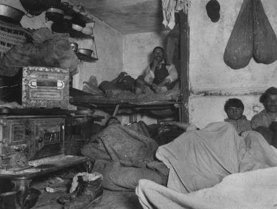
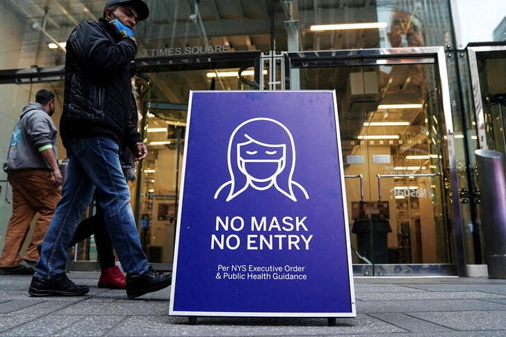

New York is Overrated
New York City has been known for its exclusive shops, flashy Broadway performances, and business tycoons, and being the center of immmigration, but what lies behind all of this? Behind New York’s flashy facade, lies an impoverished, overcrowded, and darker history. New York City has been vastly overrated in terms of living conditions and working conditions. .
New York City, was the hub of European immigration in the late 1800s and was America’s biggest city. With that however came a dark history of overpopulation, disease, and workers rights violations. In the book, How the Other Half Lives, photographer Jacob Riis captured the horrid, crime-ridden living conditions of the working class in New York City. The image “Five cents a spot” depicts a cramped tenement covered in filth with at least seven people living in it. These conditions were not suitable for one to live in. Even during that time, New York was known as the land of opportunity and success for immigrants, and for some it was, however, the conditions these immigrants had to survive in was barely livable. In addition to terrible living conditions, the working class had to deal with large corporations exploiting them. Companies like the Carnegie Steel Company, lead by Andrew Carniegie, exploited their workforce of mostly European immigrants, leading to the Homestead Strike of 1892, one of the most notable worker protests in New York’s dark history. This protest illustrated that these glorified, mega-corporations were out for nothing more than money, leaving their workforce to suffer. These acts still occur in modern day New York City with it being the center of American finance.
Mask Mandate
The US Supreme Court should not have blocked Biden’s workplace vaccine mandate. In November of 2021, the Biden administration announced two new vaccination policies which would result in millions of Americans getting vaccinated, one of them being that companies with 100 or more employees would have to vaccinate their employees, or get tested every week. The companies would provide paid time for their employees to get vaccinated and those who are not vaccinated, would be required to wear masks in the workplace. This mandate would have been good for America because it would have vaccinated millions of people, helping pull the nation out of the pandemic.The blocking of this act by the supreme court is setting the country back and not allowing us to get out of the pandemic. The reason the supreme court blocked the mandate was because they believed that it was too broad to fall under the authority of the Department of Labor's Occupational Health and Safety Administration to regulate workplace safety.
The Biden administration should roll out a new mandate that would be more largely accepted by the public, congress and the supreme court so that we can at least get some significant number of people vaccinated. A wide vaccine is just not a viable option because it will never be approved by the government, so we need to compromise. One way in which we can get a significant amount of people vaccinated to stop covid is to place vaccine mandates on more specific groups. Canada for example said it would require all those working in the federal public service and federally regulated transport sectors to get vaccinated. This has reduced the number of cases of Covid in Canada and placed importance on the health and safety of public workers.Some may say that this is an encroachment on the liberty of the people, but vaccines have been required by law for many years and the covid vaccine is no different.